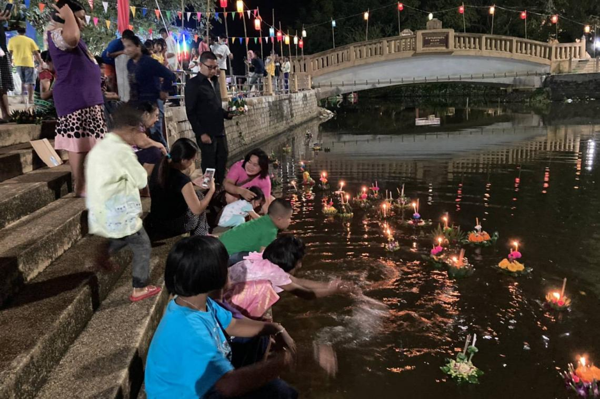

ประเพณีลอยกระทง

ประเพณีลอยกระทงนั้น ไม่มีหลักฐานระบุแน่ชัดว่าเริ่มตั้งแต่เมื่อใด แต่เชื่อว่าประเพณีนี้ได้สืบต่อกันมายาวนานตั้งแต่สมัยสุโขทัย โดยในรัชสมัยพ่อขุนรามคำแหง เรียกประเพณีลอยกระทงนี้ว่า "พิธีจองเปรียญ" หรือ "การลอยพระประทีป" และมีหลักฐานจากศิลาจารึกหลักที่ 1 กล่าวถึงงานเผาเทียนเล่นไฟว่าเป็นงานรื่นเริงที่ใหญ่ที่สุดของกรุงสุโขทัย ทำให้เชื่อกันว่างานดังกล่าวน่าจะเป็นงานลอยกระทงอย่างแน่นอน
ในสมัยก่อนนั้นพิธีลอยกระทงจะเป็นการลอยโคม โดยพระบาทสมเด็จพระจุลจอมเกล้าเจ้าอยู่หัว รัชกาลที่ 5 ได้ทรงสันนิษฐานว่า พิธีลอยกระทงเป็นพิธีของพราหมณ์ จัดขึ้นเพื่อบูชาเทพเจ้า 3 องค์ คือ พระอิศวร พระนารายณ์ และพระพรหม ต่อมาได้นำพระพุทธศาสนาเข้าไปเกี่ยวข้อง จึงให้มีการชักโคม เพื่อบูชาพระบรมสารีริกธาตุ และลอยโคมเพื่อบูชารอยพระบาทของพระพุทธเจ้า
ก่อนที่นางนพมาศ หรือ ท้าวศรีจุฬาลักษณ์ สนมเอกของพระร่วงจะคิดค้นประดิษฐ์กระทงดอกบัวขึ้นเป็นคนแรกแทนการลอยโคม ดังปรากฏในหนังสือนางนพมาศที่ว่า
"ครั้นวันเพ็ญเดือน 12 ข้าน้อยได้กระทำโคมลอย คิดตกแต่งให้งามประหลาดกว่าโคมสนมกำนัลทั้งปวงจึงเลือกผกาเกษรสีต่าง ๆ มาประดับเป็นรูปกระมุทกลีบบานรับแสงจันทร์ใหญ่ประมาณเท่ากงระแทะ ล้วนแต่พรรณดอกไม้ซ้อนสีสลับให้เป็นลวดลาย..."
เมื่อสมเด็จพระร่วงเจ้าได้เสด็จฯ ทางชลมารค ทอดพระเนตรกระทงของนางนพมาศก็ทรงพอพระราชหฤทัย จึงโปรดให้ถือเป็นเยี่ยงอย่าง และให้จัดประเพณีลอยกระทงขึ้นเป็นประจำทุกปี โดยให้ใช้กระทงดอกบัวแทนโคมลอย ดังพระราชดำรัสที่ว่า "ตั้งแต่นี้สืบไปเบื้องหน้า โดยลำดับกษัตริย์ในสยามประเทศถึงกาลกำหนดนักขัตฤกษ์วันเพ็ญเดือน 12 ให้ทำโคมลอยเป็นรูปดอกบัว อุทิศสักการบูชาพระพุทธบาทนัมมทานทีตราบเท่ากัลปาวสาน" พิธีลอยกระทงจึงเปลี่ยนรูปแบบตั้งแต่นั้นเป็นต้นมา
ประเพณีลอยกระทงสืบต่อกันเรื่อยมา จนถึงกรุงรัตนโกสินทร์ตอนต้น สมัยรัชกาลที่ 1 ถึง รัชกาลที่ 3 พระบรมวงศานุวงศ์ตลอดจนขุนนางนิยมประดิษฐ์กระทงใหญ่เพื่อประกวดประชันกัน ซึ่งต้องใช้แรงคนและเงินจำนวนมาก พระบาทสมเด็จพระจอมเกล้าเจ้าอยู่หัวรัชกาลที่ 4 ทรงเห็นว่าเป็นการสิ้นเปลือง จึงโปรดให้ยกเลิกการประดิษฐ์กระทงใหญ่แข่งขัน และโปรดให้พระบรมวงศานุวงศ์ทำเรือลอยประทีปถวายองค์ละลำแทนกระทงใหญ่ และเรียกชื่อว่า "เรือลอยประทีป" ต่อมาในรัชกาลที่ 5 และรัชกาลที่ 6 ได้ทรงฟื้นฟูพระราชพิธีนี้ขึ้นมาอีกครั้ง ปัจจุบันการลอยพระประทีปของพระบาทสมเด็จพระเจ้าอยู่หัว ทรงกระทำเป็นการส่วนพระองค์ตามพระราชอัธยาศัย วันลอยกระทงของทุกปีจะตรงกับวันขึ้น 15 ค่ำ เดือน 12 ตามปฏิทินจันทรคติไทย หรือถ้าเป็นปฏิทินจันทรคติล้านนาจะตรงกับเดือนยี่ และหากเป็นปฏิทินสุริยคติจะราวเดือนพฤศจิกายน ซึ่งเดือน 12 นี้เป็นช่วงต้นฤดูหนาว อากาศจึงเย็นสบาย และอยู่ในช่วงฤดูน้ำหลาก มีน้ำขึ้นเต็มฝั่ง ทำให้เห็นสายน้ำอย่างชัดเจน อีกทั้งวันขึ้น 15 ค่ำ เป็นวันที่พระจันทร์เต็มดวง ทำให้สามารถเห็นแม่น้ำที่มีแสงจันทร์ส่องกระทบลงมา เป็นภาพที่ดูงดงามเหมาะแก่การชมเป็นอย่างยิ่ง
ย้อนกลับ